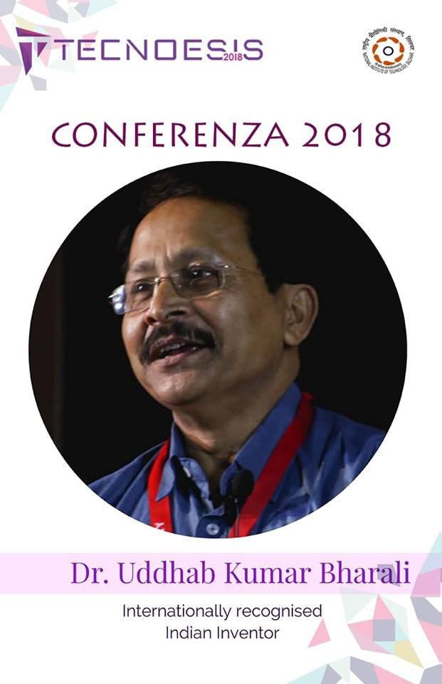
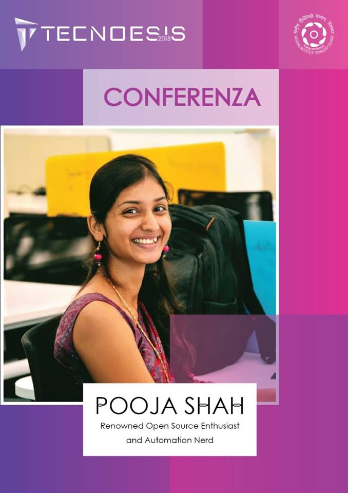
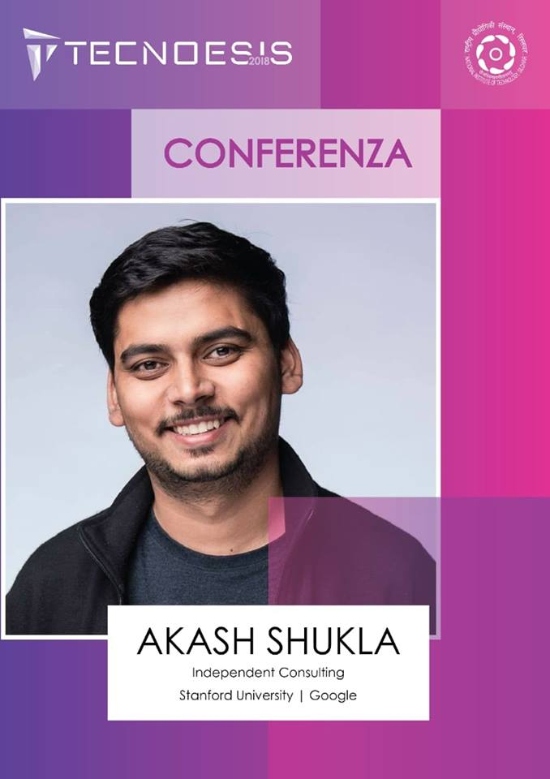
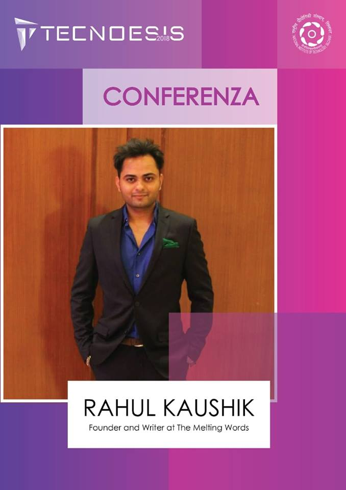
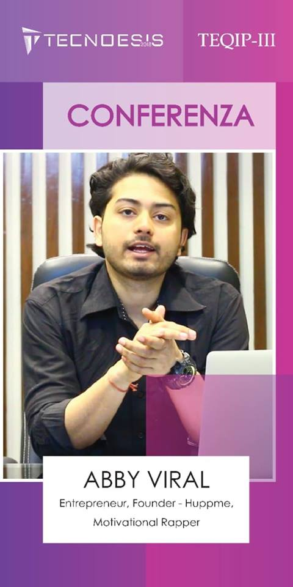

1. ROBOWARS
Description
The flagship event of any Robotics competition, Robowars, sees the age old entertainment of two robots battling it out in the center to be the last one standing. This presents a chance for the challenger to show their robotic acumen, intellect, and fighter spirit. Teams are encouraged to equip their bots with high torqued industrial motors, protective armour sheets, and well designed weapons to take down the enemy bot.
Problem Statement
Design and construct a robot capable of fighting another in a one on one tournament. This event aims to test your Robot against another in a field of combat where brute strength and cat-like reflexes hold the key to success.

Contact:
Shivam Verma - 7355466937
Debasish Kashyap- 9577499957
Registration link : Click Here
Prizes Worth : Rs 25000/-
2.ROBOSOCCER 4.0
Description
Do you get notifications for both football matches and technical advancements? Do you idolize both Sir Alex Ferguson and Elon Musk? Do you jump the same height when Messi/Ronaldo scores and when your robot follows command? And do you despise this planet because no one has been able to come up with a perfect blend of both football and tech?
Well fear not! The time has come to combine Passion and Profession. So suit up, pull up your socks, (eat that throat medicine) and get ready to shout at the top of your voice!
Find out if you have what it takes, to Roboscore!
General Instructions:
- 1.Teams must build two robots, designed and engineered in the sense that one of them will kick the ball while the other will defend your goalpost.
- 2. Team should consist of a maximum of 5 members.
"Let the battle begin"
"Que la bataille commence"
Contact:
Bolisetti Dheeraj - 7024484438
Sandeep Bolla- 9100700125
Registration link : Click Here
Prizes Worth : Rs 20000/-
3.TERRAIN TREADER
Description
Innovation is an adventurous process, and so Tecnoesis'18 presents Terrain Trader, an event where your creative intelligence is put to the test.This encourages students to design such a robot that uses innovative solutions to the challenges faced on the arena. Driving over rough terrain will be difficult and the solution to the problems will be highly interdisciplinary.
Problem statement:
To construct a manual bot capable of grabbing, lifting and pushing blocks as well as crossing different kinds of adverse terrains
Registration link : Click Here
Prizes Worth : Rs 22000/-
4.SUMOWARS:
Description
From the WALL-Es to the Terminators to Sophia, robots have instilled fascination in us all at one point of our life or the other. Sumo Wars gives you the opportunity to live out your fascination and devise your own fully functional autonomous bots.
Sumo fight is an ancient form of art practiced in eastern countries for centuries as a sport. It involves a combat between the contestants in which they try to overthrow the opponent out of arena. SUMO WARS is inspired by the same,with the exception that bots try to overrun the other bots using their swiftness and robustness. You will be needed to build your own autonomous bots and cement your name as the king of the ring.
Problem statement:
In this autonomous robotic event, the competing team has to make a bot capable of searching and pushing opponent bot out of the arena, all the whilekeeping itself inside the arena.
Registration link : Click Here
Prizes Worth : Rs 20000/-
5.ROBOBUILD
Description
Has the game Lego been a deeply etched childhood memory of yours?
If the answer to the former questions are yes, then fellas! You’ve stepped your bot in the right arena. This tecnoesis we bring to you, an event which gives you an arena to both, construct and destruct at the same time. We give your motor skills a real challenge as the bots are fully mechanized and the control tactics are in your hands.
It's not only the race with time, but also a race with your opponent to see who has smartness with strength. Burn the arena with action to see who builds the best bot to build the best tower with the timer saying tick tock tick tock......
"Build your bot, it will build for you".
Problem statement:
Your team has to build two bots (assistive and builder namely) where one constructs and the other helps you collect blocks, defend your tower, and attack the opponent’s tower to bring ’em down.
Now as your bot is restricted to enter the opponent’s boundary, you will have to add a weapon on top of your assistive bot to bring the tower down. Also, the mighty sphere is a cherry over the cake with a nostalgic tinge to Harry potter’s famous game Quidditch. To know more about the game, click on the Description given below.
Registration link : Click Here
Prizes Worth : Rs 20000/-
SPONSORS OF ROBOBUILD
6.ROBOART
Description
Why not to make your life easier when you have the power of Robotics in hand? Are mainstream event bots so much cliche for you guys and are you up for exploring the possibilities of reinvention? If yes then Roboarts is here for you - The Art Of Making Robots.
Problem statement:
The participants will be given 8 hours (4+4) to construct a bot. The bot application is unbounded, so participants are free to use their imagination and may build any kind of bot. The bot will be judged on the basis of its application, not complexity since it is a time bound event.
Contact:
Abhinav Kiran - 8210542708
Rishikesh Sutradhar- 8876959207
Shovon Samanta- 7318962336
Registration link : Click Here
Prizes Worth : Rs 15000/-
1.AUTO EXPO
Description
You will get a sublime experience of Luxurious Cars and Super bikes in this event. Various cars and bikes of Reputed companies such as Audi, Ford, Nexa, KTM and Royal Enfield will be presented in the college premises.
2.TECH EXPO
Description
This Event will consist of Humanoid Robot Show, Bionic Bird show. Along with these students get a majestic experience of drone fly zone ,VR walk through and palm controlled Drone expo.
3.ARMY EXPO
Description
Various Army Equipments will be shown to the people attending the fests.
4.FOTO GALLERIA
Description
Amidst the Cheer and Festivity of Tecnoesis, the technical Extravaganza of NIT Silchar we bring you “Foto Galeria”.
It is a one of a kind event which exhibits the best of the best images that our institute received from our Flagship Photography event Pixelate under the Module Cyberwrap.
An event which would inspire the aspiring Photographers to give their best into this field and excel to get their name inducted into this exhibition, which portrays only the finest photos from the gallery of other photos. Hence this exhibition will exhibit the beauty of the field called photography and the dedication and perception of the photographers. Here they get to show others their work in a much refined and tasteful manner thus glorifying the genre that they wanted others to recognise and appreciate them for.
From all the Entries that we received, the panel of Jury is responsible for the selection of images which would be inducted into this exhibition, considering many factors of judging. Hence if an Image is up in the Exhibition that means THE IMAGE DESERVED TO BE THERE.
1.THE PAINTBALL BATTLE
Description
Want to experience the real battle thrill!! Life is either a daring adventure or nothing at all and here is your opportunity to experience one as Tecnoesis 2k18 brings to you the paintball event yet again. The adrenaline and stress of an adventure is better than a thousand peaceful days. The game is all about a test of your physical skill and strategy to fulfil your sole objective that is to hunt down the rivals. Greater the obstacle, more the glory in overcoming it. So, come and be a part of this sport which will be one of the most thrilling experiences of your life.
2.TARGET SHOOTING
Description
What better way is there for someone to release all their anger than to pump giant amounts of lead into a great multitude of targets!!
Have you tried target shooting?
Well, the best form of stress reliever is here and the most exciting part is that you can also win rewards and take them home. All you need to do is just step out of your rooms and shoot the target.
3.CUBE WIZARD
Description
For the first time in history of Tecnoesis, we are conducting a cubing workshop cum competition. We will be explaining the solving method (algorithms and short tricks) in a structured and lucid manner. The workshop will be of 3 hours followed by speed cubing competition on very next day. We’ll emphasize on learning by doing methodology, where the participant will learn the algorithms by actually applying it on 3*3 cube. Many interesting speed cubing tips and tricks will be shared. Apart from this, the procedure of solving 2×2 and 4×4 cubes will also be discussed to make the workshop more attractive. So for all the individuals who are eager to learn cubing and not afraid to scratch their brains, this is the appropriate event to participate.
Contact:
Prateek Chand - 9452872262
Aniruddha Bhattacharjee - 8638589303
4.TREASURE HUNT 1.0
Description
Enlighten up the Fortune Seeker in you as you get a chance to go on a treasure quest which is all set up for you with exciting rewards. Tecnoesis in collaboration with Edports presents the much hunted after contest where you get to apply your wits, tackle the clues and finally make your way to the treasure.
Contact:
Shovon Samanta - 7318962336
Smriti Dwivedi - 7348224839
5.SPEED SKATING
Description
Speed skating is a competitive form of roller skating in which the competitors race each other in travelling a certain distance on skates. All the competitors start form the initial line at a same time and starts the race. The one who reaches the finish line after completing rolling for the whole long track will be the winner.
The competition will be different for boys and girls and so the winners as well.
6.STILT FOOTBALL
Description
Football being one of the greatest sport of all times, is also a fascinating past time that has the globe united.
Our love for it has lead to invest time in this sport, so let’s not sanitise this fact. What could be more interesting by making it more challenging while playing it on stilts!
So, come out and experience this extreme form of fanaticism and thrill.
Dr Uddhab Kumar Bharali

Tecnoesis'18 proudly presents Dr Uddhab Kumar Bharali, Internationally acclaimed Indian inventor as one of the guest speakers of Conferenza, 2018.
With more than 120 patented inventions, Dr Bharali is identified as one of the frontrunner Indians to have contributed in the realm of inventions. His inventions centres around the rural people and for their benefaction in agricultural activities. Some of his famous inventions include the pomegranate de-seeder machine, garlic peeling machine, tobacco leaf cutter, paddy thresher, cane stripping machine, brass utensil polishing machine etc. Apart from being recognised by NASA, he is the recipient of several prestigious awards like "President Grassroots Innovation Award", "Rashtriya Ekta Samman ", " Shrishti Samman" etc. He is also bestowed with titles like " Prayukty Ratna", "Silpi Ratna" etc. He has also been a TEDx speaker.
It is our pleasure to host such an eminent persona at our college campus.
POOJA SHAH

With the Industry tending towards Open Source contribution, there is a need for everyone to know actual definitions of Open Source and how can it really change the face of Industry. With this motive, Team Tecnoesis18 presents one of the renowned Open Source Enthusiasts, Tech Girl Pooja Shah to deliver Keynote Lecture in Conferanza'18.
Pooja is an automation nerd and open source enthusiast. She loves brainstorming and implementing crazy ideas to figure out ways to improve the product quality. Having a blend of developer, qa & devops mindset, she strives to bridge the gaps between all the teams to attain the desired results. Besides coding and open-source, she loves Yoga and Inspiring stuff.
Driven by curiosity to learn & share new things every day, she pens them, open-source, record tutorials and talk about them at relevant conferences, some of the glimpses can be found on YouTube. She have delivered many conferences in and out of our country especially on Automation and prompted many people to start working on it.
With the help of some of her loving friends at work, she now has a special colleague named Alice, a talking bot she has created to help herself in work & gain free time to play Pokemon.
Vivek Atray
 Tecnoesis18 presents the third Guest Lecturer for the much awaited Conferenza 2018, EX-IAS Vivek Atray.
Tecnoesis18 presents the third Guest Lecturer for the much awaited Conferenza 2018, EX-IAS Vivek Atray.
Vivek Atray is an Author, Motivational Speaker, Mentor and Independent Advisor. He retired voluntarily from the IAS in 2017. He has inspired thousands of youngsters to adopt a cheerful, positive and multi-dimensional approach to their lives. He has four TEDx talks. He speaks regularly on Leadership, Life skills, Pubic Speaking Skills, Emotional Intelligence, and Calmness. His novels "Move on Bunny!" & "Dubey ji Bounces Back" proved highly popular. He writes a fortnightly column- Random Forays- for the Hindustan Times. He hosts a Talk show called Delicious Conversations.
Vivek won much acclaim for his role in developing the Chandigarh IT Park. He also spearheaded the national award winning e-SAMPARK e-Governance project. He was quoted by the New York Times during this period. He also played a role in placing Chandigarh on the Heritage Tourism map. He organises the annual All India JP Atray Cricket Tournament. Vivek himself was an under-19 cricketer. He is the Mentor of the Vivek Career Academy, a founder of the Vibrant Networking Forum, the Chandigarh Literary Society & is Co-Convenor of INTACH Chandigarh.
He is an Electronics and Communication Engineer from NIT Kurukshetra. He also has a diploma in French. He believes in promoting positivity and creativity in society through his writings and Talks. His favourite book is the Autobiography of a Yogi by Paramahansa Yogananda.
Akash Shukla

To have a better tomorrow, we need to innovate today. With this motive, Team Tecnoesis18 have invited Akash Shukla, Ex-Google | Stanford University to deliver Keynote Lecture in Conferanza'18.
Akash is interested in making his mark in the betterment of society through the skills he has acquired while working with various teams and individuals. He has been a part of global communities, skilling and innovation initiatives, and have seen their impact on 300,000+ people across 18+ countries.
Having worked with teams from MIT, Harvard & Google, he has seen the power of sustained scaled efforts and has specialized himself in running globally scalable value-driven programs.
He is empowering, understands the bigger picture & helps other creates a vision. He is a through people person and loves bridging the knowledge gap which exists out there in the ecosystem.
Rahul Kaushik

"There is no greatness , where there is no simplicity, goodness and truth"
~ Leo Tolstoy
Conferenza18 takes immense pride in inviting Mr. Rahul Kaushik, founder of 'The Melting Words' to lighten up the ambiance with his pleasant insights.
Apparently, he needs no introduction. Haven't you seen his stories on someone's social media feeds ?
An engineer by profession Mr. Kaushik is a writer by heart. He founded his personal writing platform The Melting Words on Facebook and Instagram and in less than two years , it get fetched a whopping 21 lakh followers and more than 5000 write-ups have been put up there. He had already hosted lectures and workshops in institutes like IIT Bombay, SRCC Delhi , NIT Warangal and many more.
Now it's time we let our hearts melt with his words.
ABBY VIRAL

Tecnoesis18 under Conferenza18 in association with E-Cell, NIT Silchar presents before you, an Entrepreneur, Influencer, Marketer, Youtuber, Magician, Artist, Rapper, Poet, Blogger, Graphic Designer - ABBY VIRAL.
Abby Viral Rapper “Abhinav Prateek” was born on 1994 in Delhi. Since childhood, he wanted to earn money and was dreaming big to be a millionaire. He was finding and trying a new way to earn money. He finished his 12th and got admission in college to pursue his engineering. But, he never completed and dropped his engineering.
He moved to Delhi and started a new venture called "HuppMe" with an initial fund of Rs. 8000/-, where he is providing the online services of personalized gift and its transaction is near about 5.5 crores.
He is also a great motivational rapper on YouTube. His many videos are viral, and he has more than 6 Lakh + subscriber on youtube. Still, he is running behind his wonderful dreams and wants to do many things.
About himself, he says:
"Mai junoon hoon, Aur himmat behisaab hoon, Mai hazaro baar fail hua, isiliye aaj kamiyaab hoon".
1. CYBERBOT
Description
Want to see your code come alive and interact with you? Here is the perfect event for you then. Presenting before you CYBERBOT, the fun-oriented CSS Animations Workshop of Tecnoesis '18. All you need to do is to build a bot using HTML and CSS powered with some cool features using JAVASCRIPT. A 4-day workshop will be organized for the event. You will be learning everything from scratch (no prerequisite required). If you want to explore the world of web development, this is the right time to get started.
Problem Statement
Build a bot using basic web development skills.
Judging and Scoring Criteria
- Functionality: 40
- Appearance: 25
- Innovation: 15
- Code structure: 20
Contact:
Navneet Gangwar - 9627993767
Tukan Dutta- 8011568663
Registration link : Click Here
2. NIBBLE CODE 2.0
Description
Are you awed by the simple solutions to impossible problem statements? Do you want to crack a
few such by yourself?
Here comes a chance to play with bytes and fight the bugs, and all you need to do is Code to Decode.
So freshmen, buckle yourself to your seats and ready your minds to swish a flick!
Introducing you to the realm of competitive coding, we present Nibble Code 2.0! Exclusively for
freshmen, the contest will be much of a fun game which will have you scratch your heads over
simple but tricky problem statements for 3 short hours of the day.
To familiarize the enthusiasts with the competing environment, a two days’ workshop will be
organized prior to the contest which will provide them with ample knowledge such that they can
play well and battle amongst themselves for a better leaderboard position.
Problem Statement
A few questions will be listed, participants need to code the solution using any programming language. Easey peasey.
Registration link : Click Here
3.CYBER HUNT BY EDPORTS
Description
A real-time exciting and mindboggling online competition based on the Application of the web browsing skills along with the IQ levels of the player. Come forward to test your knowledge and skills on a level never tested before, for Tecnoesis 2018 presents before you Cyber Hunt by Edports.
OBJECTIVE:
To complete the event in the least possible time.
Registration link : Click Here
4.D.ART
Description
In today's generation most of the visualisation works like Machines, prototype of vehicles are first made in 3D for testing its performance. 3D modelling is also one of the major part of game development like 3D model, level design etc. The more realistic the graphics are the more players of the game. 3D is also a part of all CGI movie. So for the first time in Technoesis’ history we have a 3D modelling competition for you, where you need to make a 3D model based off of a 2D image. You may use any graphics software may it be a industry grade software Maya or open source software Blender. The event is to check your creative skills and to amplify your knowledge towards 3D development.
Problem Statement:
1.To create a 3D model of a 2D image along with proper texturing and lighting to make it look close to photorealism.
2.Time allotted: 6 hrs
Registration link : Click Here
5.TURING.AI
Description
“Celebrating Genuine Stupidity through Artificial Intelligence”
The Annual Showdown of Tecnoesis catering to the Machine Learning Enthusiasts and the Data
Scientists of NIT Silchar.
The Event has 3 sub-events under it.
1.DATA-STRATA :
The Prime Attraction of the TURING.AI Event.
Contact:
Puberun Boruah - 8474090921
Himanshu Tripathi - 9954964812
Registration link : Click Here
2.CHATBOT WORKSHOP :
In this event the participants will be taught to make a Fully Functional Chatbot from scratch.
There is no prerequisite for this workshop.
The dates of the workshop are 26th and 27th October.
Contact:
Puberun Boruah - 8474090921
Himanshu Tripathi - 9954964812
Registration link : Click Here
3. WORKSHOP ON FACIAL EMOTION RECOGNITION :
In this event the participants will be taught to develop a Facial Emotion Recognition Engine harnessing the power of Deep Learning.
The prerequisite for this workshop is Basic Programming.
The dates of the workshop are 27th and 28th October.
Contact:
Akshay Gupta - 9175146842
Rahul Debnath - 8721088790
Sanjib Das - 8135915757
Registration link : Click Here
V-WARZ
Description:
“I don’t need to get a life, I’m a gamer, I have lots of lives!”Technoesis'18 welcomes you to V-Warz, the ultimate gaming arena! Escape the reality and land into the virtual world of survival. Team up! Push yourself further than you have ever before to see the face of your next nemesis. You have to face the bests in the business and then one to be crowned the victor.
Caution: Better learn the rules of the game to play it better than anyone else! Conquer! Go! Go! Go
EVENTS
1. CS:GO
Description
When the dust has settled there are only a select few who leave their mark permanently edged into history and have their own unique paths to become Eternal Legends. Sometimes its for the gifted, the ones who share sheer force of will bend the laws of physics. Then there are the godlike those who believe immortality and valhalla joyously awaits. Which one is in you - The Gifted? The Godlike? Is your team the best of the best?
2. COD4 MODERN WARFARE
Description
Highly competitive multiplayer sport which serves as the ultimate test of decision making on the battlefield. With the pressures of a short time limit and bomb plant looming over every round, this game often delivers some of the best team and individual action gameplays. The fast-paced battle is back into action. The Assaulters, the Rushers, the pumped-up Shooters and lastly the Sniper. Has your team got it all?
3. FIFA 18
Description
When it comes to football, there's no denying it. There’s no better way to see someone’s true colors than by playing them in a game of FIFA. The club they play with, the formation they choose, and the coaching style they use all speak volumes as to what kind of person they are. What play style do you prefer?
4.PUBG
Description
Getting bored of free chicken dinners... Here NITS brings a chance to win a lot of prizes when you proove yourself the lord of battles by getting chicken dinner in real battlefield.
PUBG mobile stands for player unknown's battleground which is played in mobile. It is one of the most emerging and popular game in present time where players fight for the last survival. It is played in solo, duo and squd mode. 100 players play in one game amongst which that one squad/solo/duo which survives till the last gets the Chicken Dinner.
1.CYCLE ASSEMBLY
Description
Stranded over a road with your cycle at your feet and a wheel spinning on the road detached for its mainframe in the night will bring you the exact thought as to why this event is so magnificent in its nature. The basic Knowledge of assembling a cycle bring an engineering student one step closer to being different form others. ‘We all want to know what lies beneath the working needles of a clock but very rare have the courage to know it.’
If you think you have the courage, come and once be an engineer in practical and assemble the cycle and race to your triumph with knowledge and reward in hands.
Objective
To make the students aware of the power of knowledge that lies within their enormous minds and make them practical in nature. After all we can save a few bucks by just tightening the nut bolts on our own too.
Contact:
Vikas Lamba - 9954953413
Animesh Gupta- 7905829787
Prachi Tripathi- 8630694575
Registration link : Click Here
2.AUTOMOBILE QUIZ
Description
For those who are into all things auto, here is an innovative and exciting platform to express your passion. The riveting experience awaits you in the Fest which is open to all individuals. This event is not for just the bunch of students who know a lot about automobiles but its also for those minds that are thirsty of knowledge and facts thus exploring the exhilarating world of automobiles.
The competition will be offline consisting of a bunch of questions where u have to choose the right answer. The event is simple but a lot helpful in its nature. Sign up and take your Automobile Passion to full throttle.
Objective
To help out the students to realize their potential in just knowing about a little bit about automobiles running out on the roads out in the world.
When Henry Ford made cheap, reliable cars, people said, 'Nah, what's wrong with a horse?' That was a huge bet he made, and it worked
~ELON MUSK
Contact:
Vikas Lamba - 9954953413
Animesh Gupta- 7905829787
Prachi Tripathi- 8630694575
Registration link : Click Here
1.MY CITY MY DREAMS
Description
What is a Smart City?
“A Smart City is an urban ecosystem that places emphasis on the use of digital technology, shared knowledge and cohesive processes to underpin citizen benefits in sectors such as mobility, public safety, health and productivity.”
A Smart City Future
“Imagine a world where all cities are smart and able to thrive as part of a cohesive effort between municipalities, businesses and citizens. Many cities are now becoming smarter, adopting strategies to address a growing need to improve their ‘liveability’. Here, we explore what efforts need to be taken to improve mobility, public safety, public healthcare and productivity are being confronted as they transition to a smarter, more connected environment.”
As Albert Einstein said that Imagination is more important than Knowledge since knowledge is limited. Hence this event of "Smart City" is all about the upcoming possibilities, stupendous imagination, holistic integrated approach of the participants wherein they can hypothetically make any desired model would help the people going to live in their dream 'Smart City' and this would also help in making this world a better place to live in.
Contact:
Amitabh Dey - 7002509469
Bainapalli Akash- 9101336249
Registration link : Click Here
2.ARCHINOVA
Description
This is a event conducted to initiate and encourage the process of innovative thinking in the field of structural designing and search for new ideas to transform our surroundings.
In this event, the competing team has to prepare a model and give a presentation on it clearly stating its aim, working procedures and advantages.
Now coming to why one should take interest in Archinova :
- This event allows the participants from various discipline to showcase their structural designing skills and execute their knowledge of science in designing models.
- This event allows the participants from various discipline to showcase their structural designing skills and execute their knowledge of science in designing models.
- If your model is innovative and enough convincing, it will be executed in reality in near future keeping aside the existing prizes for the position holders!!!! Who doesn't want such fame????
Registration link : Click Here
MYNDSNARE
The quizzing extravaganza under Tecnoesis, the annual techno-management fest of NIT Silchar. Born in 2010, Myndsnare has been a huge success since then. As NIT Silchar Quiz Club is gaining popularity, eminent quizmasters like Late Vikram Joshi, Arnab Basu, Chandrakant Nair, Maharnab Gogoi, Aryapriya Ganguly, Abhra Das, Kapinjal Kumar Sharma and Manimugdha S Sharma have conducted Myndsnare in previous editions.
EVENTS
1. THE SOUND AND THE FURY
Description
‘The Sound and The Fury: The General Quiz’ is Myndsnare’s main crowd attraction, which is conducted by the most eminent quizmasters of the country. Last year, NIT Silchar Quiz Club made a benchmark in its history by having Late Vikram Joshi as the quizmaster for this event. This edition is being conducted by Kushal Patel. He has conducted many reputable quizzing events under the banners of IIM and many more.
Contact:
Puberun Boruah - 8474090921
Monseej Purkayastha- 8723857227
Abhishek kumar sharma- 8638716783
Shankhadeep Gogoi- 9678862910
2. SILICON VALLEY
Description
This year Myndsnare brings “Silicon Valley:The Biz-Sci-Tech quiz”, to be conducted by Bedanga Das, alumnus of NIT Silchar, who is a prominent quizzer in the North Eastern quizzing circuit. From being one of the founding members of NIT Silchar Quiz Club to coming back to the college as a quiz master is always fascinating.
Contact:
Puberun Boruah - 8474090921
Monseej Purkayastha- 8723857227
Abhishek kumar sharma- 8638716783
Shankhadeep Gogoi- 9678862910
3.HUNGER GAMES
Description
‘Hunger Games: The Sports and Entertainment Quiz’ shall also be conducted by Kushan Patel. Be there to bring out the Sports and Entermainment geek within you, and partake in the most brilliant fundas and trivias in the genre. From sports to movies lets see who cracks the most out of it!
Contact:
Puberun Boruah - 8474090921
Monseej Purkayastha- 8723857227
Abhishek kumar sharma- 8638716783
Shankhadeep Gogoi- 9678862910
Quizmasters :
1) Kushan Patel
2) Bedanga Das
Dates:
1) The Sound and The Fury (General Quiz): 27th October, 2018
2) Silicon Valley (Biz-Sci-Tech Quiz): 28th October, 2018
3) Hunger Games: The SpEnt quiz: 29th October, 2018
1. If I Were the CEO
DESCRIPTION
Ever conjectured about a life where you enhance the technicalities of being a CEO ? The hindrances and snags they have to undergo in pursuance of the comprehensive assets of a company. Here is your opportunity to showcase your skills in handling a task if you were a CEO.
Task/Problem Statement
This online event promotes participants to answer the question”If i were the CEO of XYZ company,then how would i have undertaken the company’s tasks differently?What changes would i have brought about for the overall augmentation of the company?”
Bhargav Kadupukutla - 7799496455
Inzamamul Haque Mondal- 9126450254
Refer to the pdf for more instructions.
Registration link : Click Here
2. PITCH PLEASE
DESCRIPTION
Conceiving an idea may be fundamental . But today in a world with a million ideas, without proper knowledge and way of selling your idea, even a brilliant idea would yield no fruit. Here is where the beauty of the term “PITCHING” comes into effect. In Layman’s terms, it means presenting your idea in front of a potential investor, convince him about the viability of your product, clear his doubts and show them the dreams that you have been dreaming to contribute to the world in general by setting up a prospective business from your idea. If you want to master and test your art of persuasion and selling your idea, this event is the ideal place for you to be.
Subham Kumar Ahir - 8011363111
Udit Pathak - 9954960226
Refer to the pdf for more instructions.
Registration link : Click Here
3.BECH KE DIKHAO
Description
Like all other talents and skills honed over time, selling something is truly an art form that takes practice to improve upon.
The art of selling anything in today's world requires creativity and should know about the customer's pulse.
If there is a company that sells similar products or services to yours, you can only make customers buy from you if you have special selling techniques going on.
E-Cell, NITS brings you the most exciting event "Bech Ke Dikhao" under the module of "Empresario" in this "Technoesis" to test your creativity and spontaneity by selling a bunch of crazy items to the customers
Task
Here you will be given a random item and you have to convince the judges to buy it. As the saying goes “Item doesn't get sold, emotions and stories does”, so how well can you connect emotions and stories to get your Product sold will be checked.
Rezaul Hussain - 8876988614
Pushpendra Kumar- 7903372837
Subra Jyoti Baroi- 8474828814
Refer to the pdf for more instructions.
4.AD-OVATION
Description
In a world where thousands of innovations and billions of ideas occur every single day, do YOU have what it takes to get your idea out to this world?
Advertising a product to the masses is so much more nuanced than just telling people about it. Ad-Ovation invites you to do exactly that. We tell you what product to promote. Your challenge is to make your very own video advertisement for it as creatively as you can. People vote for your advertisement with Facebook reactions, you inch closer and closer to winning.
Participate in Ad-Ovation and walk away with exciting prizes and the pride of popularity. Your product will be etched in everyone’s mind and so will you be.
Dipayan Choudhury - 7086609323
Prateek Chand- 9452872262
Refer to the pdf for more instructions.
5.TAGLORE
Description
The tagline game.
"Imagination is the beginning of creation. You imagine what you desire, You will what you imagine, and at last, you create what you will.
"
Experience the world of taglines with your imagination. Showcase your creativity to relate taglines under given situations. In fact this is a platform to reflect your marketing skills.
Prizes Worth : Rs 5000/-
1.ROBOTICS WORKSHOP
Description
Robotics is an emerging technology that is changing the world. Are you intrigued by it and want to dig deeper into this technology? Then grab this chance to learn something new about this technology! Just clear the prelims and you are good to go.
2.SCIENTIFIC DIG
Description
The vast universe of science has always kept us gazing inamazement . This event aims to uncover the scientific intelligence of students where they need to identify the various phenomena being asked in the question. Questions will be aided by visuals.
3.TEENPRENEUR
Description
Ever dreamt of becoming the CEO of a company? Does management amaze you? Then there's no waiting! Teenpreneur is the best platform to kick start your dreams. Come, showcase your inner managerial skills and amuse us! The participants will be given a hypothetical situation for which they will have to provide solution from a CEO’s point of view to resolve the same.
4. STARTUP BUZZ
Description
Did you know that 3-4 startups are registered per day in India? This event has been orchestrated in order to familiarise you with this rising vogue in our country. Does entrepreneurship amaze you and inspire you to start a business of your own? Then “Start Up Buzz” is a wonderful chance for you to manifest your ideas. Prepare a presentation consisting of details like working idea, cost, agendas, advertisement, marketing etc. and share it with the audience.
5. CRIME SCENE INVESTIGATION
Description
“Crime Scene Investigation” is the ultimate destination to display your crime solving abilities and thus bring out the Sherlock Holmes in you! So get ready for some adventure and don the detective’s hat as we bring to you several tantalizing crime scenes.
6. ALMANAC OF EVOLUTION
Description
The world of science and technology is ever growing and never fails to capture our minds. This event is a model making competition where the participants have to come up with innovative ideas and present their models to the judges. Participation may be either individually or in teams.
7. TASKABET
Description
A little offbeat, Taskabet is no conventional event! An engaging game
where individuals have to perform the assigned tasks, get letters for each
accomplished task and make words from them to gain points, Taskabet is sure to
enthrall you!
Students may participate individually or in groups of 3.
8. XENG
Description
The ultimate concoction of amusement and learning, Xeng, is back to mesmerise the young quiz lovers all over again. The qualifying teams will have to tackle against one another to clinch the prizes.
9.WHAT IF?
Description
What if another advanced species existed? What if India never got
freedom from British rule? Things would have taken a turn and been something
so different!
Plunge into your time machines, exercise your brain cells and create a whole new
scenario from your imagination within a the given time, explaining what would
have been different and how.
10.SPELL BEE
Description
This is a shout out to all those who are taken aback by the aura of words and want to test their vocabulary. So, all the word fanatics gear up and get ready to compete in the ultimate battle of words.
11.SPOKEN POETRY
Description
People say that the performance of poetry is an art, just as
much an art as the art of writing it.
Hence, “Spoken Poetry” is for those who are passionate about portrayal of
emotions and thoughts through words. So, recite aloud your self-written poem or
any other poem of famous poets and leave us spellbound!
You can choose whichever language you wish.
12.TECHart
Description
As American director John Lasseter said “ The art challenges
technology, and technology inspires art”. Their fusion always results in something
innovative. So, all the budding artists out there, come and illustrate your ideas.
You will be provided with pencil and paper. Carry your own colours along to add
more beauty to our ideas.
Contestants for TECHart will be selected on the basis of the prelims i.e. Logo
Design.
13.SHUTTERWORLD
Description
Hey all the shutterbugs out there! School Genius brings to you Shutterworld 4.0, the online photography contest, giving you a golden opportunity to display your skills and capture scintillating moments. Interested ones can submit their entries, the theme of which should be FESTIVAL or ARCHITECTURE.
14.MATH π- RATES
Description
Math π- rates is especially designed for sharpening the
mathematical skills of the students. All maths enthusiasts are welcomed to
participate in this event. Come, turn the math mode on and bring out the inner
mathematician in you!
It will be held in two parts-
A. Prelims- MCQs to be solved within duration of 45 minutes.
B. Mains- MCQs to be solved within duration of 60 minutes
15.CRUSADE
Description
“Crusade” invites all the avid debaters to participate in this event, where you'll have a healthy discussion on a given topic. This is a perfect platform to polish and showcase your debating skills.
16. XTREME TYPING
Description
School Genius 2018 proudly introduces Xtreme Typing, a rip
roaring event where you have to put your typing speed to test. So, take a deep
breath and fight in the ultimate battle of speed. For coming to the main event,
you need to clear the prelims,
Prelims - Memory test : Students will be asked some engrossing questions to test
their memory. The highest scoring students will qualify to the next round.
17. PICTURE PERCEPTION
Description
Love creative writing? Do you want to dive into the world of imagination and put forward your thoughts? Then Picture Perfection opens the door to you! School Genius 2018 brings forward this event where you will be given a picture and you need to process it in your own way and write down what you think of it.
For All Events Contact:
Nishan Deb - 8638270648
Ashesh Choudhury- 7002402243,
Debajit Malakar- 7002827469
1. DRAFT RITZ
Description
Designing plays an essential role in innovation. The field of designing accounts for majority of private research and development spending and employs a significant percentage of engineers. In order for society to benefit from the latest advances in technology, skilled engineers and novel designing techniques will be required.
There is a thirst among every engineer for designing, a thirst which is motivated by seeing day to day things ranging from a small pin to huge working machine. This thirst which has resulted for the designing of basic component parts of a machine to the design of highly sophisticated engines.
General design competitions have always had a constraint that bounds the imaginative skills of the enthusiasts to create something new or intuitive, so to tackle this ASME NIT Silchar Chapter came up with this competition. It is a competitive event where the design and imaginative skills of the participants will be put to test under the ticking of a clock.
Contact:
Kshitij Mehrotra - 9634857887
Dhruv Gupta- 8318734532
Registration link : Click Here
2.ROCKETO POLEMOS
Description
Ever wondered how to make rockets? Here is your chance. This Tecnoesis ASME NIT Silchar Chapter presents to you Rocketo Polemos, an amateur rocketry competition where you will build your own rocket and compete with others. We have always had that little curiosity and desire to build rockets since childhood, this is the time to showcase your hidden talent.
The competition expects the participants to showcase their innovative ideas and how they can apply their ideas and knowledge in the field of application and design a rocket. A basic knowledge of Chemistry of fuel and oxidizers is expected although it isn’t necessary. Your interest matters not your branch or discipline. Come join us and check whether you have the necessary skills to fly up high in the sky
Contact:
Karan Chetri - 8471880811
Sohail Sajid Alam- 9706442354
Registration link : Click Here
3.SAILOR SAFARI
Description
Are you fond of making paper boats during rainy season and love to compete as to which one goes faster? Then look no further as, this Tecnoesis ASME NIT Silchar Chapter presents to you Sailor Safari. The event comprises of a boat racing competition where you will build your own boat competing against time and other participants (or should we say pirate sailors!!!). Guess what?? There's only one rule, the fastest shall survive. Come join us on this ride and enjoy the thrill on top of a boat and see whether you can weather the storm and battle your way to glory.
Contact:
Arnab Roy - 9859772100
Rituraj Choudhury- 8638293104
Registration link : Click Here
1.PSYCHE ATTACKS
Ever watched “Bigg Boss”? What about “Khatron Ke Khiladi”? These successful shows boast of millions in viewership. Ever wondered why? There’s this event to show you how it works. We are bringing to you “Psyche Attacks” under the module THE PSYCHE WIZARD XXI. It is a powerful idea that is two steps further ahead from all others. To bring a package full of emotions, entertainment and lifelong learning for the first time in a college is a feat in itself. And participating in it is an even bigger feat. Believe us – you won’t want to miss it!
Description
In this game two teams will be chosen to compete with each other in efforts of ‘surviving’ i.e., to stay in the game till the very end. The game set will be arranged in accordance with a chosen theme – World War II for example. They will be confined in a space for ten hours and will be given special tasks to perform putting their mental and psychological strengths to test. The whole game show will be closely monitored and will be broadcasted, divided into episodes for the outside world to watch.
2.WEBDOORS
Description
Have you ever wondered, how psychology plays a major role in solving practical problems? What about the sharp mind of Sherlock Holmes?
Take a look at the following case. There is this man whose body is athletic, fit and fine. One day in particular, he stretches his arms in attempt of grabbing as much food from the table as possible. People are around and he doesn’t care. Calories are high and he doesn’t care. What inference do you draw here?
Take a pause and give it time. The situation easily depicts that the ‘athletic’ man must be very hungry at that time.
3.TRUE & FALSE
Description
What happens to your body language when you speak a lie? There’s a lot of debate on whether it is possible to detect a liar or not. Wouldn’t you like to check your skills in this art used intensely in interrogations by police and secret agencies? Sometimes speaking false may give rise to humor and sometimes it is more stressful. This mixture of sharp and soft is presented in the event “True & False”. Come, see what makes you a good liar or a good detector. It is a fun filled edutainment event that you’ll definitely enjoy.